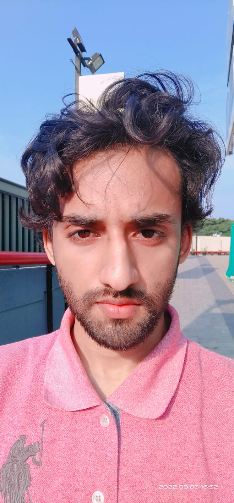

Vanaj Kumar Yadav

Summary :
I have Completed my BEng in Computer science in june 2022 , since then i have been continuously learning and acquiring new skills
and I am interested in going for the higher studies.I am very dynamic and that is what which gives me an edge in this highly competitive and rapidly
changing world of technology and advancement.
Education :
- Schooling (nursery to 8th) :from MMSC PUBLIC SCHOOL (2002 to 2013).
- High school and 10+2 in PCM : from PUBLIC HIGH SCHOOL SAHULI (2013 to 2017).
- Graduation : Bachelors of Engineering in Computer science from SATHYABAMA INSTITUTE OF SCIENCE AND TECHNOLOGY (2018 to 2022).
Work Experience :
- less than a year as a Java developer in Mphasis (04/022 to 09/022)
Skills :
- MS WORD.
- MS EXCEL.
- MS POWERPOINT.
- MS NOTEPAD.
- Analytical thinking.
- Logical thinking.
- Critical thinking.
- Html 5.
- CSS , Javascript, javascript ES6 (medium level).
- C-programming (advance level).
- C++ (Basic level).
- Java programming (medium level).
- SQL, Node.js, Bootstrap 5, jQuery.
- Python programming (medium level).
Core Computer science subjects Knowledge(Very Good At) :
- C-programming (C).
- Algorithms (ALGO).
- Data Structures (DS).
- Data Base Management System (DBMS).
- Computer Network (CN).
- Operating System (OS).
- Computer Organisation and Architecture (COA).
- Theory Of Computation (TOC).
- Compiler Design (CD)
- Digital logic and Design (DLD)
Certifications :
-
udemy certificate
-
udemy certificate
-
udemy certificate
-
udemy certificate
-
udemy certificate
-
udemy certificate
-
certificate of internship